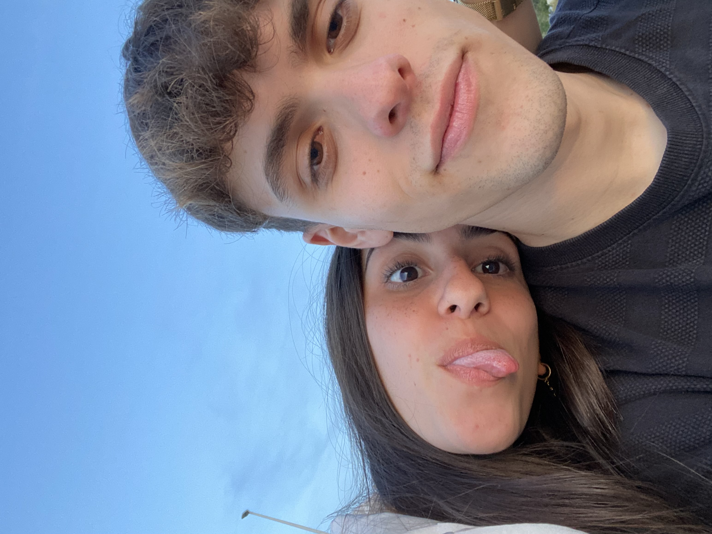

Aqui está una de las primeras fotos que me hice contigo, por que la primera la tienes tu y no te quería preguntar para no ser tan cantoso. No sabes la sensación de entusiasmo por conocer a una persona que me hiciste sentir de nuevo Marta. Recuerdo esos días que ibamos a la Cinta tan bonitos, tenías muchas ganas de conocer mi zona junto a mi y yo te llevaba y nos dabamos paseos por la Orden. He valorado siempre muchísimo el hecho de que tu quisieses venir y estar conmigo por donde yo vivo y eso me llenaba de ilusión por dentro. Nunca había conocido una persona que se implicase así conmigo y sinceramente cada vez fuiste cautivandome mucho más.